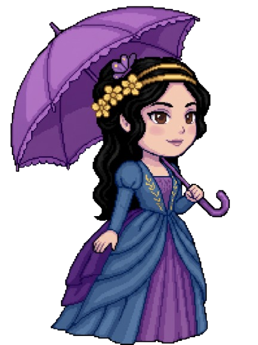

Três caminhos, muitas possibilidades

Adaanotações sobre uma máquina programávelGraceinstruções mais próximas das pessoas
Margaretfluxograma de um sistema confiável
Ada ajudou a imaginar possibilidades para uma máquina programável. Grace trabalhou para tornar a programação mais acessível. Margaret ajudou a mostrar como software confiável é essencial em sistemas críticos. Elas viveram em épocas diferentes e não formaram uma cadeia direta de colaboração. Suas trajetórias se conectam porque ampliaram, cada uma à sua maneira, o que a computação poderia ser.
Qual caminho despertou mais sua curiosidade: imaginar possibilidades, tornar ferramentas mais acessíveis ou construir sistemas confiáveis? Não existe resposta certa — essa escolha pode ser o começo de uma nova pergunta.